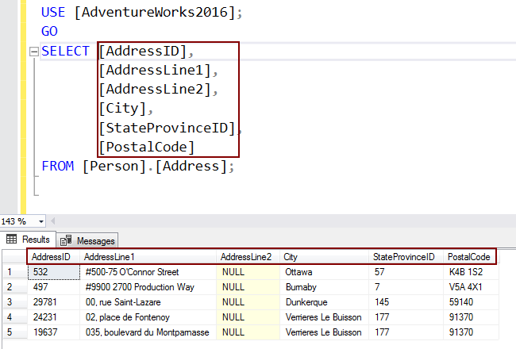

Sql Server
.png)
Microsoft SQL Server es un sistema de gestión de bases de datos relacionales (RDBMS) desarrollado por Microsoft que permite almacenar y recuperar datos de forma segura y eficiente utilizando Transact-SQL (T-SQL), un lenguaje de consulta estructurado (SQL) con extensiones propias. Sirve como un servidor de bases de datos para aplicaciones y herramientas, gestionando desde grandes aplicaciones conectadas a Internet hasta aplicaciones locales, y ofrece diversas herramientas para el análisis y la gestión de datos.
¿Para qué sirve?
Almacenamiento y recuperación de datos:
Su función principal es almacenar y acceder a grandes volúmenes de información de forma segura, como listas de clientes, catálogos de productos o datos multimedia.
Gestión de datos empresariales:
Es fundamental para el funcionamiento de aplicaciones web y otras aplicaciones empresariales al gestionar información estructurada en tablas.
Análisis y Business Intelligence:
Ofrece herramientas para analizar datos, obtener información valiosa sobre negocios y clientes, y aprovechar la inteligencia artificial a través de la integración con servicios de Azure.
Escalabilidad:
Microsoft comercializa diferentes ediciones para adaptarse a distintas cargas de trabajo, desde aplicaciones para una sola máquina hasta sistemas a gran escala con muchos usuarios simultáneos.
Ejemplo de CRUD operacion
